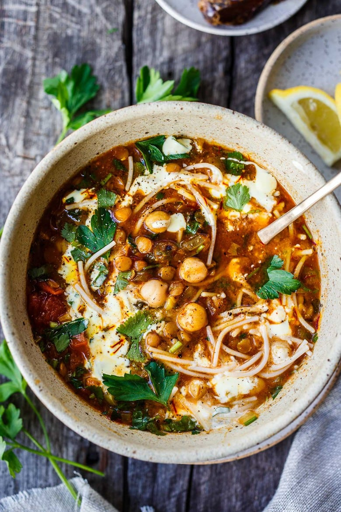

Harira

Description
Moroccan Lentil and Chickpea Soup (aka Harira) is hearty, full of protein and loaded with nutrients. Warming fragrant spices make this healthy one-pot meal deeply flavorful! Vegan and Gluten-Free adaptable.
Ingredients
- veggies: onion, garlic, celery
- spices: ginger, black pepper, turmeric, cumin, paprika, cayenne, cinnamon stick and saffron
- beans: chickpeas, red lentils, green or brown lentils
- broth: vegetable, chicken, or lamb
- canned tomatoes
- pasta: wheat or rice
- fresh herbs: cilantro & parsley
- honey
- lemon
Steps
- Prep your veggies, gather spices, chop fresh herbs.
- Saute onions for 5 minutes in olive oil, over medium heat.
- Add celery, garlic, ginger, pepper, turmeric, cumin, and cayenne stir for another minute. Blooming the spices in the oil, deepens the spice flavors bringing out the complexities.
- Add broth, tomatoes, cinnamon sticks, saffron, salt, red lentils, brown lentils, half of the cilantro and half of the parsley.
- Bring to a simmer, partially covered with a lid, for 30 minutes.
- Add chickpeas and pasta cook 5-10 minutes more. Until pasta is cooked.
Expert Tip: If you plan to save the soup for eating later or plan to freeze some of it, cook the pasta separately and add it in per serving. Especially good for some of the gluten-free varieties of pasta that tend to break down.
- Add remaining fresh herbs.
- Serve with lemon wedges, a swirl of yogurt and dates on the side.